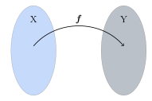
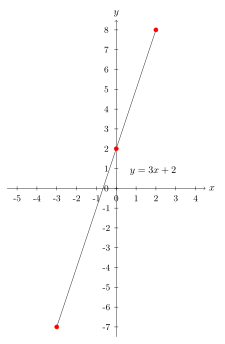
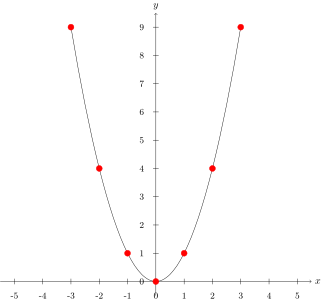
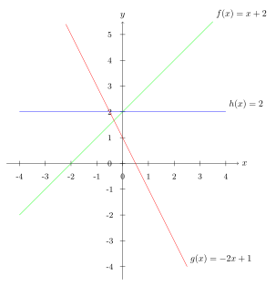
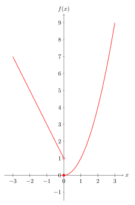
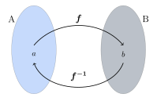

5. Föll
5.1. Varpanir og föll
Vörpun
en: mapping, record, transform, transformation
Smelltu fyrir ítarlegri þýðingu.
Látum \(X\) og \(Y\) vera mengi. Vörpun frá \(X\) yfir í \(Y\) er regla sem úthlutar sérhverju staki í \(X\) nákvæmlega einu staki í \(Y\). Hefðin er að tákna slíka vörpun (reglu) með bókstaf. Ef \(f\) er vörpun frá \(X\) yfir í \(Y\) og \(x \in X\), þá táknum við með \(f(x)\) stakið í \(Y\) sem vörpunin \(f\) úthlutar stakinu \(x\).
Mengið \(X\) kallast
skilgreiningarmengi
en: argument domain, domain, domain carrier, index set, latent domain, range of arguments, set of definition, source
Smelltu fyrir ítarlegri þýðingu.
Smelltu fyrir ítarlegri þýðingu.
Smelltu fyrir ítarlegri þýðingu.
Varpanir eru táknaðar með ýmsum hætti, til dæmis
\(f: X\to Y\)
\(X \overset{f} \to Y\)
\(X\to Y, \ x\mapsto f(x)\)
en sú fyrsta er mest notuð innan Háskóla Íslands og víðar.
{kind=link}

Athugasemd
Þegar bakmengið \(Y\) er hlutmengi í rauntölunum \(\mathbb{R}\) þá tölum við yfirleitt um
fall
en: function
Smelltu fyrir ítarlegri þýðingu.
Dæmi
1. Látum \(X=\mathbb{R}\) og \(Y=\mathbb{R}\). Skilgreinum nú fall sem segir að sérhverju staki \(x\in X\) verði úthlutað stakinu \(x^2\in Y\).
Köllum þetta fall \(f\).
Fallið tekur stakið \(2 \in X\) og úthlutar því stakinu \(2^2 = 4 \in Y\). Fallið tekur stakið \(9 \in X\) og úthlutar því stakinu \(9^2 = 81 \in Y\). Með öðrum orðum þá varpar fallið stakinu \(2 \in X\) í stakið \(2^2 = 4 \in Y\), og varpar \(9 \in X\) í \(9^2 = 81 \in Y\).
Það er, \(f(2)=4\) og \(f(9)=81\).
Við viljum oftast skrifa þessa reglu með því að nota táknmál, því það er fljótlegra en að skrifa allan textann að ofan. Við getum skilgreint þetta fall með því að skrifa:
2. Skilgreinum fall
\[g: \mathbb{R} \to \mathbb{R}, \qquad g(x)=3x+2\]Þetta táknmál er nóg til að skilgreina fallið því við getum lesið úr því hvað fallið gerir. Það tekur hvert stak \(x\) í \(\mathbb{R}\) og úthlutar því staki með því að margfalda \(x\) fyrst með \(3\) og bæta svo \(2\) við.
Við getum t.d. reiknað út að
\[\begin{split}\begin{aligned} f(3)&=3 \cdot 3 +2 = 11 \\ f\left(\frac{17}{18}\right)&=3 \cdot \frac{17}{18}+2=\frac{29}{6}\\ \end{aligned}\end{split}\]Þetta getum við gert við hvert einasta stak í \(\mathbb{R}\), það er, hverja einustu rauntölu. Þessi regla varpar hverri rauntölu í einhverja aðra rauntölu.
3. Við getum líka skilgreint fall frá rauntalnabili. Skoðum vörpunina í fyrri lið, en látum núna
\[g: [1,7] \to \mathbb{R}, \qquad g(x)=3x+2\]Hér er skilgreiningarmengið bil. Fallið varpar nú einungis hverju staki á bilinu \([1,7]\) í eitthvert stak \(g(x)\), sem er rauntala. Til dæmis er \(g(1)=3 \cdot 1 + 2=5\), en til dæmis er talan \(8\) ekki í skilgreiningarmenginu svo hún fær ekkert gildi.
5.1.1. Dæmi um vörpun sem er ekki fall
Munum að fall er vörpun þar sem bakmengið er \(\mathbb{R}\), það er, fyrir fall \(f\) er \(f(x)\) alltaf rauntala. En varpanir geta átt við um eitthvað annað en tölur.
Látum \(A\) vera mengi allra íslenskra orða og \(B\) vera mengi allra íslenskra bókstafa. Skilgreinum nú vörpun á \(A\) sem úthlutar sérhverju orði í \(A\) fyrsta bókstafnum í því. Köllum þessa vörpun \(h\).
Þessi vörpun úthlutar orðinu ,,grís‘‘ bókstafnum ,,g‘‘ og þess vegna skrifum við \(h(\text{grís})=\text{g}\). Þessi vörpun úthlutar orðinu ,,kirkja‘‘ bókstafnum ,,k‘‘ og þess vegna skrifum við \(h(\text{kirkja})=\text{k}\).
Í liðnum á undan náðum við að skilgreina föllin \(f\) og \(g\) með formúlu. Hér er engin formúla til og við verðum að láta okkur nægja að útskýra hana með orðum.
5.2. Graf vörpunnar
Graf
en: graph
Smelltu fyrir ítarlegri þýðingu.
Það er mengi allra
tvennda
en: ordered pair, couple, pair
Smelltu fyrir ítarlegri þýðingu.
Það getur verið gagnlegt að teikna upp mynd af grafinu í hnitakerfi. Skoðum dæmi um það að teikna myndir af gröfum falla.
Dæmi
1. Skoðum aftur fallið
\[g: \mathbb{R} \to \mathbb{R}, \qquad g(x)=3x+2\]Til að teikna graf þess getum við reiknað út nokkra punkta sem tilheyra því.
Ef \(x=0\) þá er \(y=g(0)=3 \cdot 0+2=2\). Við merkjum punktinn \((0,2)\) á myndina.
Ef \(x=2\) þá er \(y=g(2)=3 \cdot 2 +2=8\). Við merkjum punktinn \((2,8)\) á myndina.
Ef \(x=-3\) þá er \(y=g(-3)= 3 \cdot (-3)+2=-7\). Við merkjum punktinn \((-3,-7)\) á myndina.
Næst teiknum við feril sem fer í gegnum punktana, en þeir liggja allir á beinni línu. Við höfum áður séð að allir punktar í hnitakerfi sem uppfylla jöfnu á forminu \(y=hx+s\) liggja á línu í plani. Grafið er því lína en: straight line, row
og teygir sig óendanlega langt í báðar áttir.
Smelltu fyrir ítarlegri þýðingu.
2. Skoðum fallið
\[f: \mathbb{R} \to \mathbb{R}, \qquad f(x)=x^2\]Reiknum út nokkra punkta sem tilheyra grafinu.
Ef \(x=0\) þá er \(y=f(0)=0^2=0\). Við merkjum punktinn \((0,0)\) á myndina.
Ef \(x=1\) þá er \(y=f(1)= 1^2=1\). Við merkjum punktinn \((1,1)\) á myndina.
Ef \(x=-1\) þá er \(y=f(-1)= (-1)^2=1\). Við merkjum punktinn \((-1,1)\) á myndina.
Ef \(x=2\) þá er \(y=f(2)= 2^2=4\). Við merkjum punktinn \((2,4)\) á myndina.
Á sama hátt fást punktarnir \((-2,4)\), \((3,9)\) og \((-3,9)\).
Teiknum nú feril sem fer í gegnum alla punktana. Þessi ferill kallast fleygbogi en: parabola
.
Smelltu fyrir ítarlegri þýðingu.
Öll gildin sem eru á þessum ferli, það er allir punktar á svörtu línunni, uppfylla skilyrðið \(y=x^2\).
5.3. Jafnstæð og oddstæð föll
5.3.1. Skilgreining
Skilgreining
Látum \(f: \mathbb{R} \to \mathbb{R}\) vera fall.
Við segjum að \(f\) sé
jafnstætt
en: even
Smelltu fyrir ítarlegri þýðingu.
Við segjum að \(f\) sé
oddstætt
en: odd
Smelltu fyrir ítarlegri þýðingu.
5.3.2. Myndræn útskýring
Skilgreiningin segir að fall sé jafnstætt ef graf þess er eins ef því er speglað um \(y\)-ásinn.
Eins þá er fall oddstætt ef graf þess er eins ef því er speglað um \(y\)-ás og svo speglað um \(x\)-ásinn.
Myndin að ofan sýnir jafnstætt fall.
Myndin að ofan sýnir oddstætt fall.
Athugasemd
Ekki eru öll föll oddstæð eða jafnstæð. Föll geta verið hvorugt.
Dæmi
Skerum úr um hvort föllin séu jafnstæð, oddstæð, eða hvorugt.
1. Fallið \(f:\;\mathbb{R} \to\mathbb{R}\) gefið með \(f(x)=x^2\).
\(f\) er jafnstætt því að fyrir öll \(x\in\mathbb{R}\) gildir \(f(-x)=(-x)^2=x^2=f(x)\)
2. Fallið \(g:\;\mathbb{R} \to\mathbb{R}\) gefið með \(g(x)=x^3\).
\(g\) er oddstætt því að fyrir öll \(x\in\mathbb{R}\) gildir \(g(-x)=(-x)^3=-x^3=-g(x)\)
3. Fallið \(h:\;\mathbb{R} \to\mathbb{R}\) gefið með \(h(x)=x^2+x^3\).
Hér er \(h\) hvorki jafnstætt né oddstætt. Til að sýna það þurfum við einfaldlega að finna dæmi um \(x\) þannig að \(h(-x)\not=h(x)\) og \(h(-x)\not=-h(x)\).
Ef að við prófum \(x=2\) fáum við að \(h(2)=12\), \(h(-2)=-4\). Við sjáum þá að \(h(-2)\not=h(2)\) og \(h(-2)\not=-h(2)\).
5.4. Einhalla föll
5.4.1. Skilgreining
Skilgreining
Látum \(X\) vera hlutmengi í rauntölunum og \(\ f: X \to \mathbb{R}\) vera fall.
Ef um sérhver \(x_1,x_2 \in X\) sem eru þannig að \(x_1<x_2\) gildir
þá er \(f\) sagt vera
vaxandi
en: increasing, ascending, isotone, monotonically increasing, non-decreasing
Smelltu fyrir ítarlegri þýðingu.
Ef um sérhver \(x_1,x_2 \in X\) sem eru þannig að \(x_1<x_2\) gildir
þá er \(g\) sagt vera
minnkandi
en: decreasing, antitone, descending, monotonically decreasing, non-increasing
Smelltu fyrir ítarlegri þýðingu.
Ef ójöfnurnar fyrir fallgildin í skilgreiningunum væru strangar væri \(f\) sagt vera
stranglega vaxandi
en: strictly increasing
Smelltu fyrir ítarlegri þýðingu.
Smelltu fyrir ítarlegri þýðingu.
Fall sem er annaðhvort vaxandi eða minnkandi er sagt vera
einhalla
en: monotonic
Smelltu fyrir ítarlegri þýðingu.
Fall sem er annaðhvort stranglega vaxandi eða stranglega minnkandi er sagt vera
stranglega einhalla
en: strictly monotone
Smelltu fyrir ítarlegri þýðingu.
Hér sjáum við dæmi um fall \(f\) sem er vaxandi og fall \(g\) sem er minnkandi.
{kind=link}
Athugasemd
Stranglega vaxandi fall er sér í lagi vaxandi, en vaxandi fall er ekki endilega stranglega vaxandi. Eins eru stranglega minnkandi föll sér í lagi minnkandi, en ekki endilega öfugt.
Dæmi
1. Byrjum á því að skoða línur í plani.
Fallið \(f: \mathbb{R} \to \mathbb{R}\) þannig að \(f(x)=x+2\) er stranglega vaxandi. Ljóst er að fyrir öll \(x_1,x_2\) þannig að \(x_1>x_2\) þá er \(f(x_1)>f(x_2)\). Við vitum að hallatalan er jákvæð og því er ljóst að ef við færum okkur til hægri eftir \(x\)-ásnum á mynd grafsins þá hækkar fallgildið.
Fallið \(g: \mathbb{R} \to \mathbb{R}\) þannig að \(g(x)=-2x+1\) er stranglega minnkandi, vegna þess að hallatalan er neikvæð.
Fallið \(h: \mathbb{R} \to \mathbb{R}\) \(h(x)=2\) er fastafall. Það varpar hverri einustu rauntölu yfir í töluna \(2\). Graf þess er bein lína með hallatölu \(0\).
Fallið \(h\) er bæði vaxandi og minnkandi.
Þetta er vegna þess að jafnaðarmerkið í skilgreiningunni gildir, þ.e. um öll stök \(x_1, x_2 \in \mathbb{R}\) gildir \(h(x_1)=h(x_2)\). Samkvæmt skilgreiningunni er vaxandi fall þannig að \(h(x_1) \geq h(x_2)\) fyrir \(x_1>x_2\), og minnkandi fall er þannig að \(h(x_1) \leq h(x_2)\) fyrir \(x_1<x_2\). Í þessu tilfelli gildir jafnaðarmerkið í öllum tilfellum og því getum við sagt að fallið sé bæði minnkandi og vaxandi. \(h\) er hins vegar hvorki stranglega minnkandi eða stranglega vaxandi.

2. Föll geta verið vaxandi/minnkandi á bili. Skoðum fallið \(f: \mathbb{R} \to \mathbb{R}, f(x)=x^2\). Þetta fall er stranglega vaxandi á bilinu \((0, \infty)\), en stranglega minnkandi á bilinu \((-\infty, 0)\).
Athugasemd
Ávallt ber að varast að ákvarða hvort fall sé einhalla út frá mynd. Hægt er að nota diffrun til að ákvarða nákvæmlega hvar fall er minnkandi eða vaxandi, en við förum ekki yfir það hér.
5.5. Gaffalforskrift
Sumum föllum er ekki endilega hægt að lýsa með einni jöfnu, t.d. þegar lýsa þarf lotubundnum föllum. Þá er fallinu oft lýst með mismunandi formúlum á mismunandi bilum. Skoðum fallið
Þetta fall tekur því gildið \(-2x+1\) fyrir öll neikvæð gildi á \(x\) en jákvæð gildi eru sett í annað veldi.
{kind=link}

5.6. Lotubundin föll
Við segjum að fall sé
lotubundið
en: periodic
Smelltu fyrir ítarlegri þýðingu.
5.6.1. Skilgreining
Skilgreining
Fall \(f: \mathbb{R} \to \mathbb{R}\) er sagt vera lotubundið með lotu \(a\) ef \(a \in \mathbb{R}\) og \(f(x+a)=f(x)\) fyrir öll \(x \in \mathbb{R}\).
Athugasemd
Óformlega þýðir þessi skilgreining að ef við færum okkur um fjarlægðina \(a\) á \(x\)-ásnum þá hefur fallið sama gildi þar, það er, það hefur sama gildi í punktinum \(x\) og punktinum \(x+a\), og hér má \(x\) vera hvaða tala sem er.
Dæmi
Látum \(f: \mathbb{R} \to \mathbb{R}\) vera fallið sem er með lotu \(2\) og er skilgreint með:
Tökum eftir að formúlan er aðeins tekin fram fyrir bilið \([-1,1[\) en hún nægir samt til að skilgreina fallið á öllu \(\mathbb{R}\), því ef \(x\) er tala sem er ekki á þessu bili þá getum við fundið fallgildið með því að notfæra okkur lotu fallsins. Til dæmis ef við ætlum að reikna \(f(5)\) þá athugum við að
þar sem lota fallsins er \(2\) fæst þetta út frá skilgreiningu.
Hér að neðan er mynd af fallinu. Upphaflega lotan sem gefin er með formúlu er mörkuð innan við punktalínur.
5.7. Andhverfur falla
5.7.1. Skilgreining
Skilgreining
Látum \(A\) og \(B\) vera mengi og \(f: A \to B\) vera
vörpun
en: mapping, record, transform, transformation
Smelltu fyrir ítarlegri þýðingu.
og
þá kallast fallið \(g\)
andhverfa vörpunarinnar
en: inverse mapping
Smelltu fyrir ítarlegri þýðingu.
Þá er \(f: A \to B\) og \(f^{-1}: B \to A\)
og
{kind=link}

Hér sjáum við einfalt dæmi um andhverfa vörpun, þar sem \(f\) hefur
skilgreiningarmengi
en: argument domain, domain, domain carrier, index set, latent domain, range of arguments, set of definition, source
Smelltu fyrir ítarlegri þýðingu.
Smelltu fyrir ítarlegri þýðingu.
Athugasemd
Vörpunin \(f^{-1}\) er sú regla sem úthlutar sérhverju staki \(f(a)\) í \(B\) stakinu \(a\) í \(A\). Það má orða það óformlega að andhverfa \(f\) sé vörpun sem gerir ,,akkúrat öfugt‘‘ við það sem vörpunin \(f\) gerir.
Dæmi
1. Skilgreinum fall \(f:\; \mathbb{R}_+\to \mathbb{R}_+\) með formúlunni \(f(x)=x^2\). Finnum andhverfu fallsins \(f\).
Skilgreiningarmengið er hér jákvæðu rauntölurnar. Andhverfan er \(f^{-1}(x)=\sqrt{x}\). Staðfestum það:
Fyrir sérhvert \(x\in \mathbb{R}_+\) er \(f(f^{-1}(x))=(\sqrt{x})^2=x\).
Fyrir sérhvert \(x\in \mathbb{R}_+\) er \(f^{-1}(f(x))=\sqrt{x^2}=x\).
Andhverfan hefur verið staðfest.
2. Skilgreinum fall \(f:\; \mathbb{R}_-\to \mathbb{R}_+\) með formúlunni \(f(x)=x^2\). Finnum andhverfu fallsins \(f\).
Tökum eftir að þetta er ekki alveg sama fallið og í dæminu á undan því að skilgreiningarmengið er annað, nú er skilgreiningarmengið neikvæðu rauntölurnar. Við sjáum að ef \(x\) er neikvæð rauntala þá er \(\sqrt{x^2}=-x\).
Til dæmis ef \(x=-3\) þá fæst \(\sqrt{x^2}=\sqrt{(-3)^2}=\sqrt{9}=3=-(-3)=-x\).
Þess vegna er andhverfufallið í þetta skiptið \(f^{-1}=-\sqrt{x}\). Staðfestum það:
Fyrir sérhvert \(x\in\mathbb{R}_+\) þá er \(f(f^{-1}(x))=(-\sqrt{x})^2=(\sqrt{x})^2=x\)
Fyrir sérhvert \(x\in\mathbb{R}_-\) þá er \(f^{-1}(f(x))-\sqrt{x^2}=-(-x)=x\)
Þetta staðfestir andhverfuna.
Athugasemd
Ef við ætlum að finna andhverfu \(f : X \to Y\) þurfum við að umrita það með því að skipta á \(y\) í staðinn fyrir \(f(x)\) í formúlu fallsins og svo einangra \(x\)-ið. Þá eru við komin með nýtt fall af \(y\) sem passar vegna þess að andhverfan á að vera \(f^{-1} : Y \to X\).
Dæmi
1. Látum \(f:\;\mathbb{R}\to\mathbb{R}\) vera fall gefið með formúlunni
\[f(x)=x+4\]Finnum andhverfu fallsins. Við leitum að vörpun sem gerir ,,öfugt‘‘ við það sem \(f\) gerir.
Skrifum \(y\) í staðinn fyrir \(f(x)\) í formúlu fallsins.
\[y=x+4\]Einangrum \(x\) úr þessari jöfnu
\[x=y-4\]Þetta gefur okkur að andhverfa \(f\) er (skiptum um nafn á breytunni)
\[f^{-1}(x)=x-4.\]
2. Látum \(f\) vera fall gefið með formúlunni
\[f(x)=\frac{x+5}{x-2}\]Finnum andhverfu fallsins.
Skrifum \(y\) í staðinn fyrir \(f(x)\) í formúlu fallsins
\[y=\frac{x+5}{x-2}\]Einangrum nú \(x\) í þessari jöfnu: Fáum
\[y(x-2)=x+5\]Margföldum upp úr sviganum og færum yfir jafnaðarmerkið til að fá
\[yx-x=5+2y\]Tökum \(x\) út fyrir sviga vinstra megin
\[x(y-1)=5+2y\]Deilum í gegn með \((y-1)\) til að fá
\[x=\frac{5+2y}{y-1}\]Nú höfum við einangrað \(x\) úr upphaflegu jöfnunni. Andhverfufallið okkar er þá (skiptum um breytu)
\[f^{-1}(x)=\frac{5+2x}{x-1}\]
Athugasemd
Athugum að þegar skilgreiningarmengi falls er ekki tilgreint má gera ráð fyrir að það sé stærsta mögulega skilgreiningarmengið. Skilgreiningarmengi \(f\) yrði þess vegna hér \(\mathbb{R}\setminus\{2\}\). Tveir eru dregnir frá menginu því annars yrði deilt með núlli. Skilgreiningarmengi andhverfufallsins \(f^{-1}\) yrði \(\mathbb{R}\setminus\{1\}\) út af sömu ástæðu.
Ítarlegri umfjöllun um föll má finna hér .